Conditional Catalog Sets¶
Alation Cloud Service Applies to Alation Cloud Service instances of Alation
Customer Managed Applies to customer-managed instances of Alation
You can use conditional catalog sets to group data objects based on conditional rules which you specify when creating the set.
Grouping similar or identical data objects under a conditional catalog set allows you to bulk-curate the catalog fields on all the data objects by applying changes directly to the set and not to each specific object. The changes you make using the catalog set are shared to all the catalog set members. Bulk-editing using a catalog set helps achieve curation consistency and saves you time and effort.
Creating a Conditional Catalog Set¶
You need a Catalog or Server Admin admin role to be able to create catalog sets and bulk-edit field values of catalog set members.
To create a conditional set,
On the main toolbar, click Curate then click Catalog Sets. You will be navigated to the Catalog Sets page:
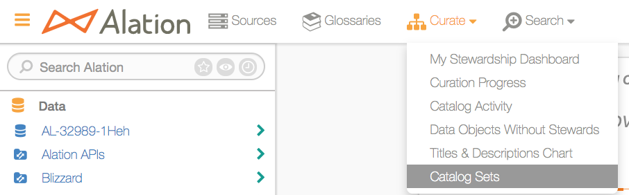Note
The Curate menu will only be visible to a user if:
Stewardship Dashboard is enabled in Alation.
If hats are enabled and the user is wearing the Data Governor/Curator hat.
Standard Users wearing the Data Governor/Curator hat can only view the existing catalog sets. If the Curate menu is not available, catalog sets can be accessed using the page URL:
<your_alation.com> /catalog_sets/.Alternatively, you can click the Admin Settings icon on the upper-right of your Alation page to navigate to the Admin Settings page:

In the Catalog Admin section, click Catalog Sets to open the Catalog Sets page:
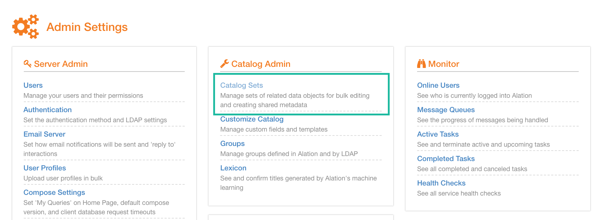
3. On the Catalog Sets page, on the upper-right, click the add icon:
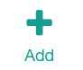
On the New Catalog Set page that opens, provide a Title for your new set.
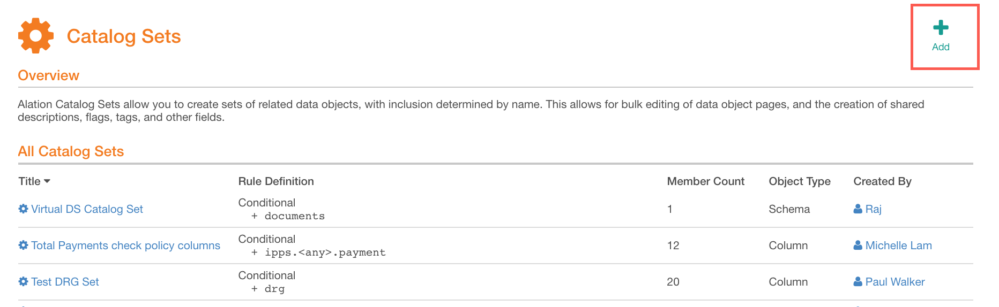
By default, the Conditional type of catalog set is pre-selected:
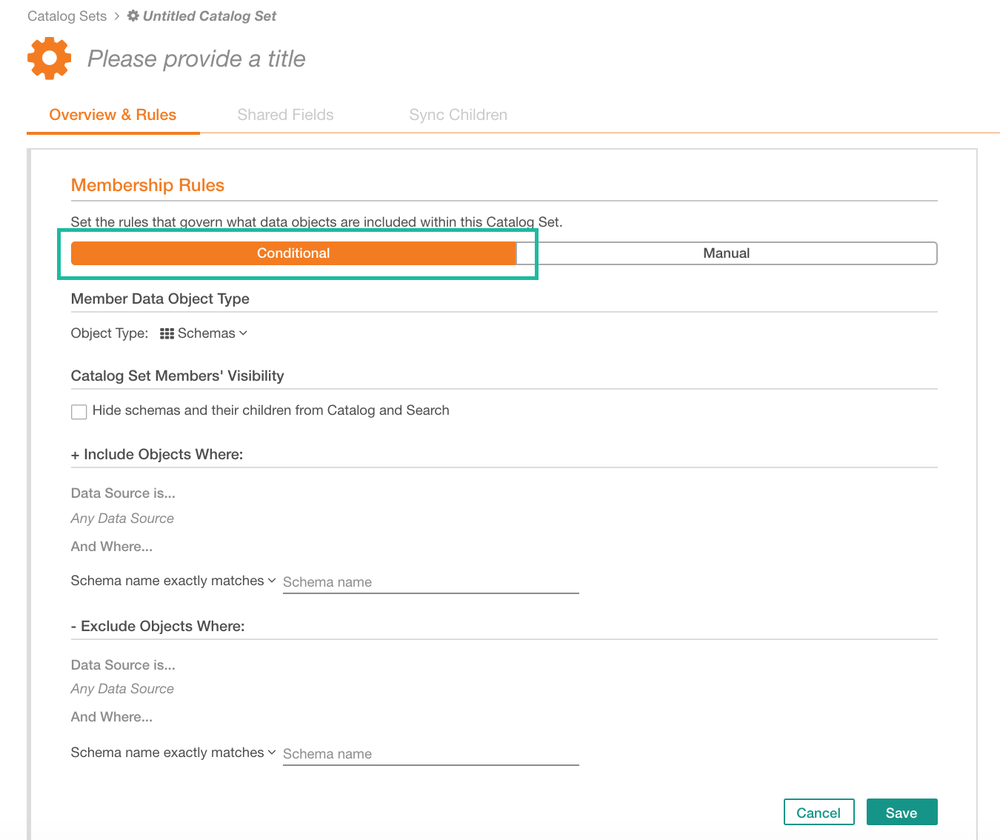
On the Overview & Rules tab, under Conditional, select the Member Data Object Type. This parameter specifies the type of data objects that you want to group in this set. The choice is:
Schemas
Tables
Columns
The number of other settings to specify will depend on the selected data object type. You will notice that the list of parameters changes depending on your choice of the object type:
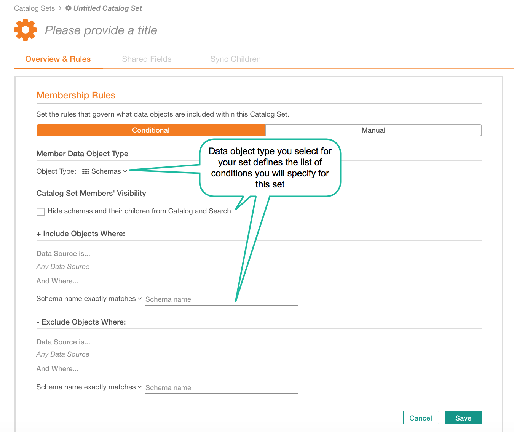
If you have chosen Schemas as the Member Data Object Type, then under Catalog Set Members’ Visibility, select the Hide schemas and their children from Catalog and Search checkbox if you want the schemas and their child objects in this catalog set to be undiscoverable by other catalog users when they browse and search the catalog. Leave this checkbox clear if visibility of the catalog members is of no concern.
Note that the Visibility setting is available on the Schema level only but will not be present for Table or Column level. It can only be applied to a schema and all of this child objects, but cannot be selectively applied to some tables and columns.
Continue to define your set by specifying the conditions for its members:
+ Include Objects Where Set of rules to include data objects into the set.
- Exclude Objects Where Set of rules to exclude data objects from the set.
Both the include and exclude rules have identical conditions:
Data Source is A data source condition (this is available from V R6 (5.10.x)).
Schema/Table/Column name: the data object name condition:
exactly matches
starts with
ends with
matches regex
The data source and data object name conditions are joined with AND logic.
Membership Rules:
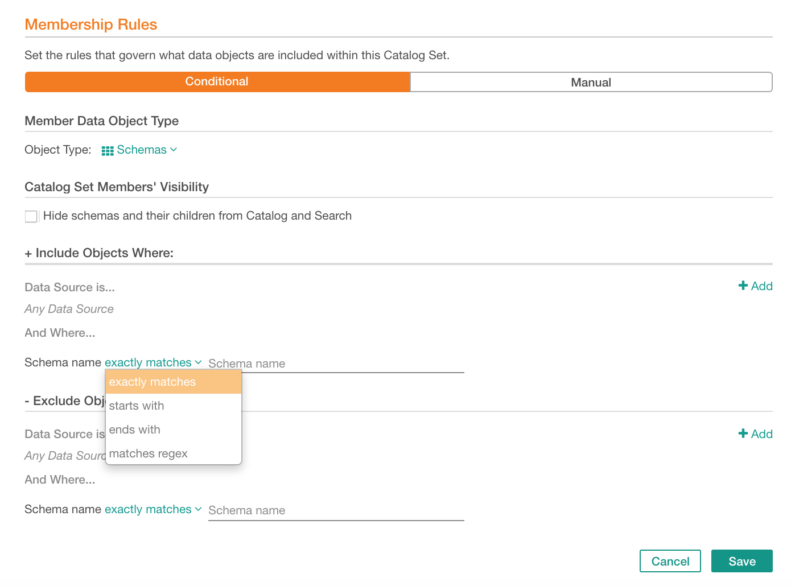
If you want to group data objects from specific data sources, select one or multiple data sources for the Data Source is condition, which is available from V R6 (5.10.x). If you want to group data objects across all data sources in your catalog, leave the data sources condition empty.
To select a data source, hover over the catalog set page to reveal the add icon next to Data Source is condition:
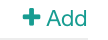Click it to open the data source quick filter. Find and select the data source from the list of available data sources.
Note
Due to a known issue, the already selected data sources are not currently filtered out from the list of data sources in the quick search filter. If you select a data source but then open the search filter and search for it again, it will still be present in the list of available data sources.
Selecting Data Sources:
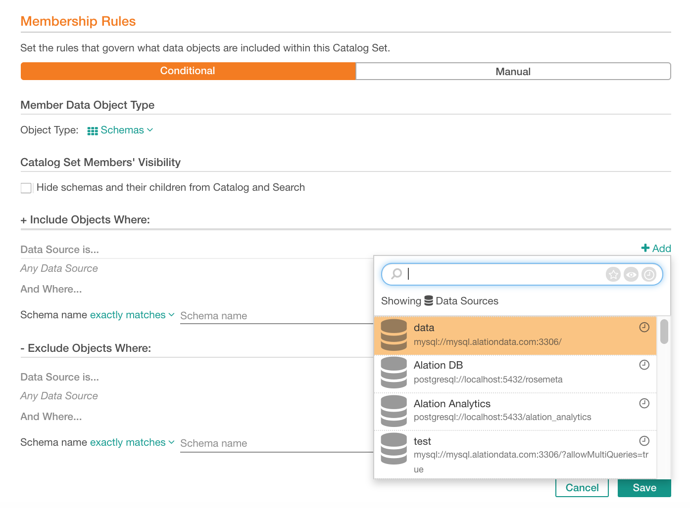
Proceed to specify the data object name conditions by selecting the required pattern and typing in the expression for matching:
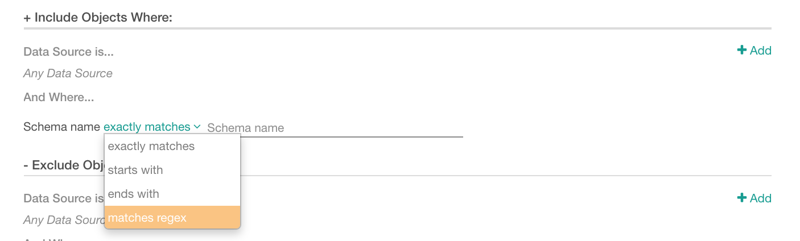
At the bottom, on the right, click Save to save your new conditional catalog set. You will land on the catalog page of this set that displays the list of catalog set members that match the conditions you have specified in the set membership rules:
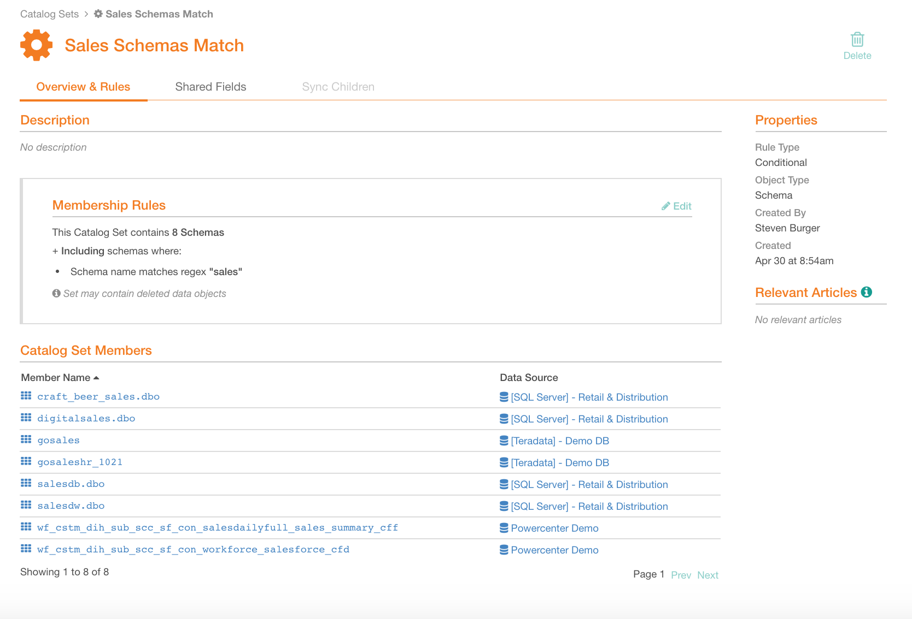
Now you can bulk-edit the fields on the catalog set members.
Updating a Conditional Catalog Set¶
You can change a conditional catalog set by changing the catalog set rules.
Important
The Member Data Object Type and Catalog Set Members’ Visibility cannot be changed.
To edit a conditional catalog set,
1. Open the page of this set and in the Membership Rules section, click Edit. The catalog set settings page will open:
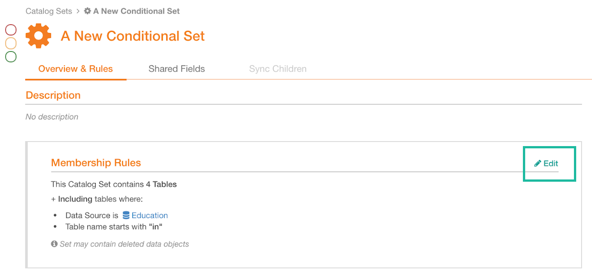
Change the Catalog Set Rules as necessary. If you change the rules, the list of matching data objects is likely to change. Click Preview on the bottom-right to view the updated list of data objects that fit the updated condition.
Click Save to save the changes when you are satisfied with the result.
Deleting a Catalog Set¶
You need the role of the Catalog or Server Admin to be able to delete catalog sets. To delete a catalog set, open its catalog page and click the delete icon on the upper right:

Confirm deletion. The catalog set will be deleted. The field values previously propagated from this set will be cleared from the data objects previously grouped in this set.
Using Regex in Catalog Sets¶
In Catalog Sets you can use Regex patterns to locate data. This section lists some of the more useful patterns.
OR Logic: Approximate Matching¶
Use the pipe symbol | to separate the expressions: <term>|<term>. This will approximately match the terms.
Example: drg|ssn
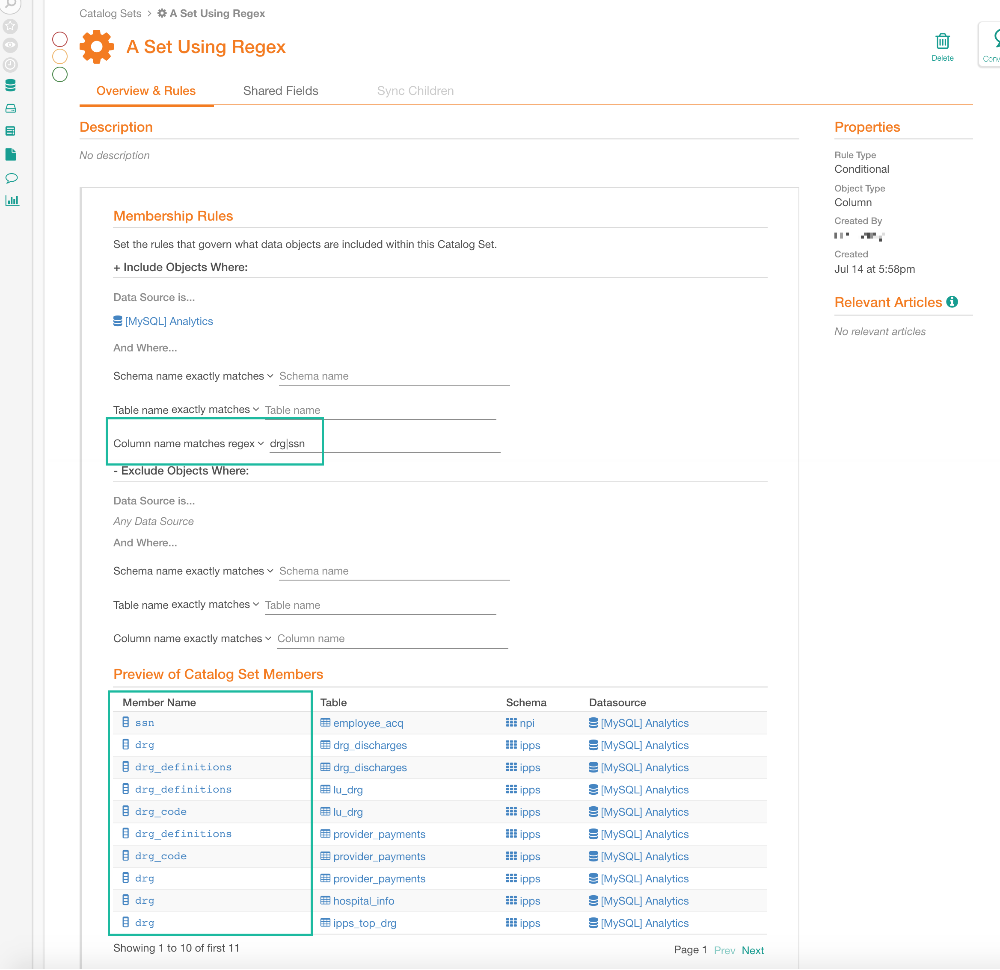
OR Logic: Exact Matching¶
Use the following format: ^<term>$|^<term>$, for example: ^drg$|^ssn$:
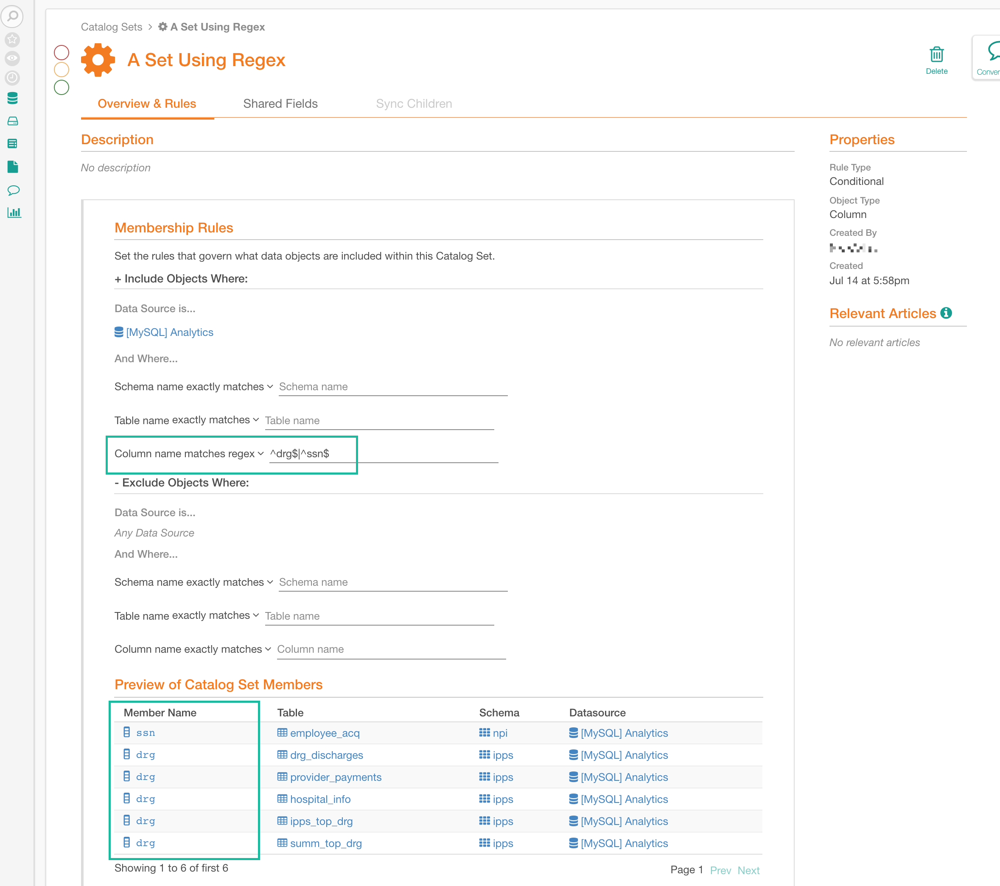